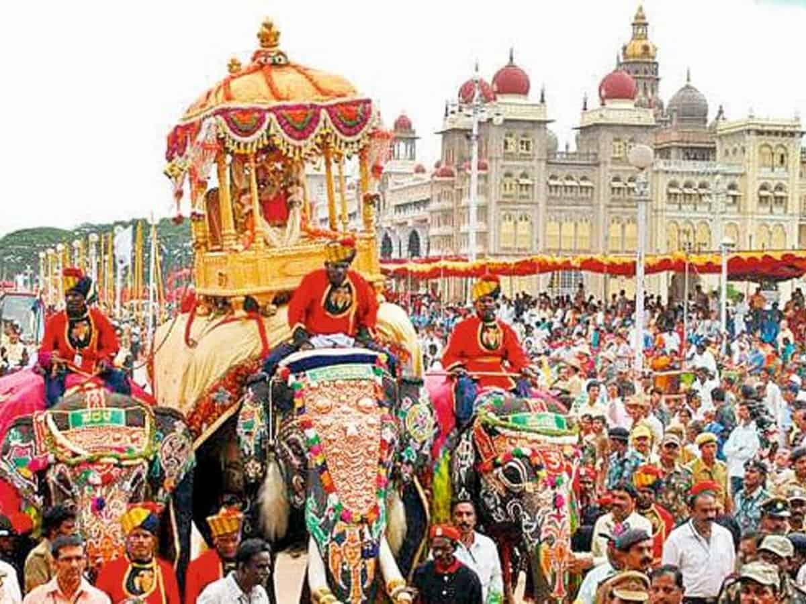
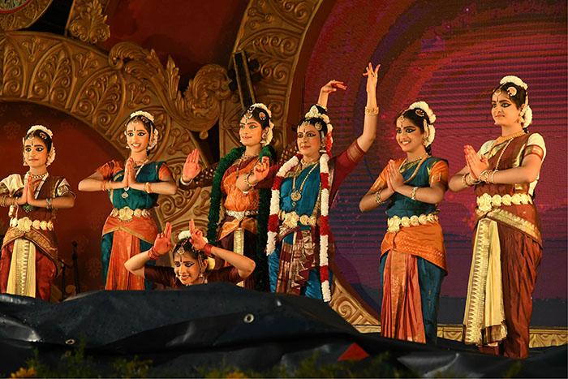
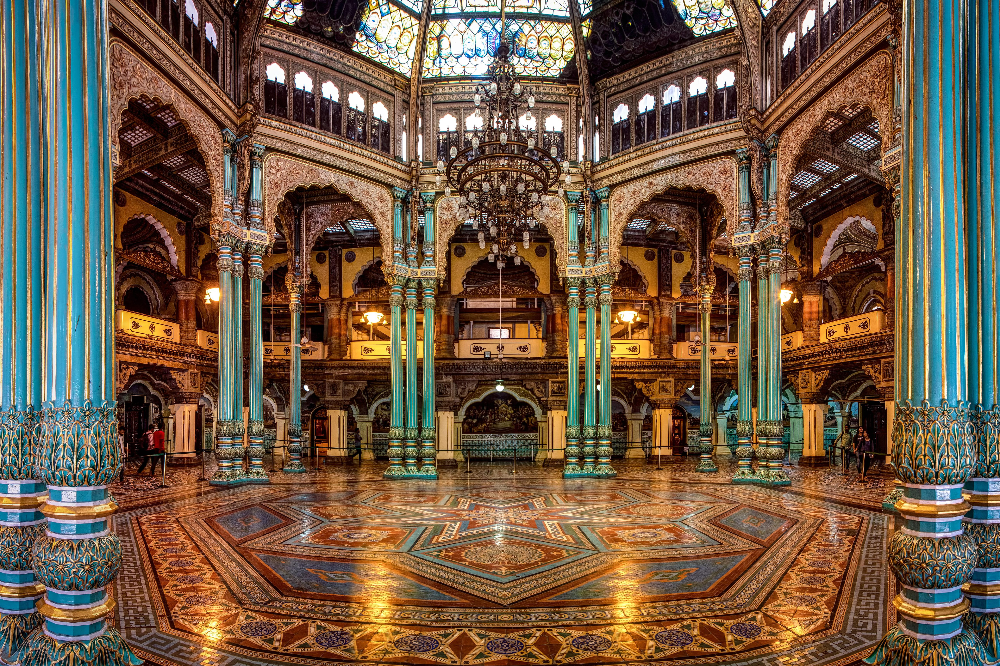

Experience the royal celebrations, cultural programs and heritage events of Mysore Palace.

Witness the world-famous Mysore Dasara festival featuring the royal procession, decorated elephants, cultural performances, music, dance and the grand celebrations of Karnataka's heritage.
October (Annual Festival)
10:00 AM onwards

Enjoy captivating Bharatanatyam, Dollu Kunitha and other traditional Karnataka dance performances presented by renowned cultural artists.
Every Saturday & Sunday
5:30 PM

Discover the magnificent royal interiors, priceless artefacts, historical paintings, royal costumes and the rich legacy of the Wadiyar dynasty.
Open Throughout the Year
10:00 AM – 5:30 PM
Every Sunday, public holidays and during special occasions, Mysore Palace is beautifully illuminated with nearly one lakh lights, offering visitors a breathtaking royal experience.